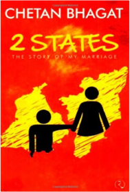
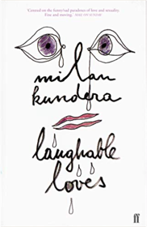
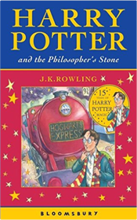

2 States: The Story of My Marriage
Chetan Bhagat8129115301Love marriages around the world are simple: Boy loves girl. Girl loves boy. They get married. In India, there are a few more steps: Boy loves Girl. Girl loves Boy. Girl's family has to love boy. Boy's family has to love girl. Girl's Family has to love Boy's Family. Boy's family has to love girl's family. Girl and Boy still love each other. They get married. Welcome to 2 States, a story about Krish and Ananya. They are from two different states of India, deeply in love and want to get married. Of course, their parents don t agree. To convert their love story into a love marriage, the couple have a tough battle in front of them. For it is easy to fight and rebel, but it is much harder to convince. Will they make it? From the author of blockbusters Five Point Someone, One Night @ the Call Center and The 3 Mistakes of My Life, comes another witty tale about inter-community marriages in modern india.
The Master and Margarita
Bulgakov, Mikhail0330351346
Laughable Loves
Kundera, Milan0571206921
The Other Side of Truth
Naidoo, Beverley0141304766
Harry Potter and the Philosopher's Stone
Rowling, J. K.0747532745Harry Potter is an ordinary boy who lives in a cupboard under the stairs at his Aunt Petunia and Uncle Vernon's house, which he thinks is normal for someone like him who's parents have been killed in a 'car crash'. He is bullied by them and his fat, spoilt cousin Dudley, and lives a very unremarkable life with only the odd hiccup (like his hair growing back overnight!) to cause him much to think about. That is until an owl turns up with a letter addressed to Harry and all hell breaks loose! He is literally rescued by a world where nothing is as it seems and magic lessons are the order of the day. Read and find out how Harry discovers his true heritage at Hogwarts School of Wizardry and Witchcraft, the reason behind his parents mysterious death, who is out to kill him, and how he uncovers the most amazing secret of all time, the fabled Philosopher's Stone! All this and muggles too. Now, what are they?